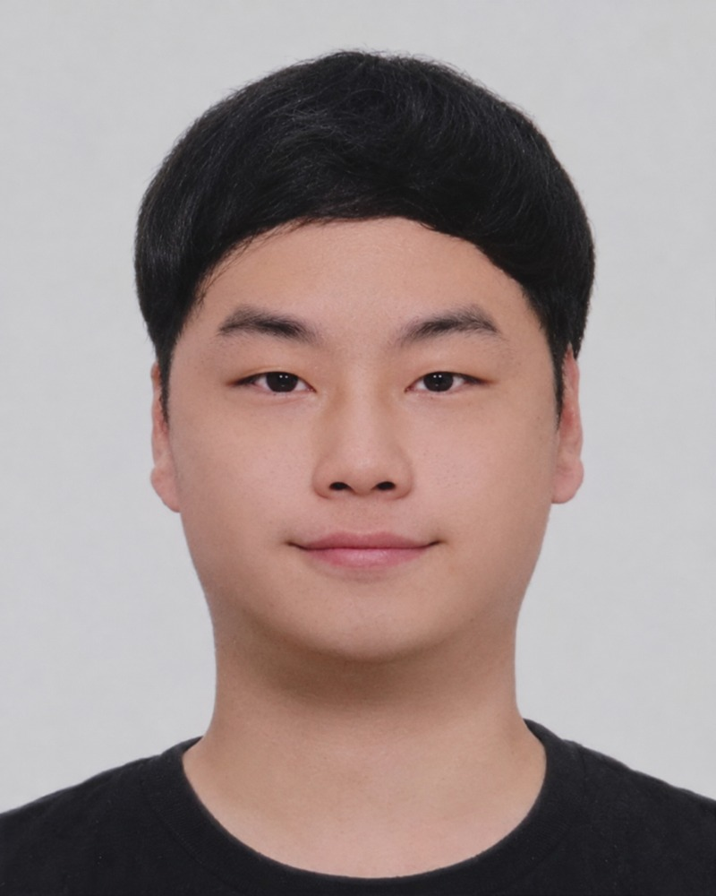
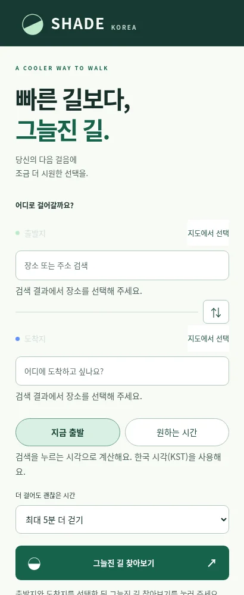

TEAM PROJECTS · 02함께 만든 작업
개인 작업과 함께, 팀으로 참여했던 두 프로젝트도 짧게 남깁니다.
주맥
팀으로 함께 만든 작업
I Do It
팀으로 함께 만든 작업
강도엽 · 디자인과 웹 구현
일상의 작은 질문을 발견하고,
디자인과 웹으로 풀어가는 강도엽입니다.
생각을 정리하고, 직접 만들며 다듬은 작업들을 모았습니다.
끝까지 함께해 주셔서 감사합니다.
강도엽 · 디자인 & 웹

일상에서 마주친 불편이나 궁금함을 프로젝트의 출발점으로 삼습니다. 필요한 정보와 사용 흐름을 정리하고, Figma와 Photoshop으로 시각적인 방향을 구체화한 뒤 HTML, CSS, JavaScript로 구현합니다.
만든 화면은 직접 사용하고, 크기를 바꾸고, 전후를 비교하며 다듬습니다. 보기 좋은 화면과 사용하기 편한 흐름이 함께 남도록 작은 부분까지 살핍니다.
개인 작업과 함께, 팀으로 참여했던 두 프로젝트도 짧게 남깁니다.
팀으로 함께 만든 작업
팀으로 함께 만든 작업
IDEAS & WORK IN PROGRESS
잠시 멈춰둔 실험에서 남은 질문을 정리하고,
다음 아이디어가 화면으로 이어질 자리를 남깁니다.

갈수록 더워지는 여름, 조금 돌아가더라도 햇빛에 덜 노출되는 그늘길을 추천해 더위 속 이동에 도움을 주고자 만든 프로젝트입니다.
5.17 프로토타입 · 현장 검증을 남겨둔 작업
작업 파일 받기새로운 시도와 그 과정에서 남긴 생각을 차근차근 모아갑니다.
프로젝트에 대한 질문이나 협업 제안이 있다면 아래 연락처로 전해주세요.